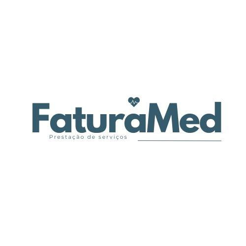

Cada atendimento, conciliado.
Visitas, consultas, exames e procedimentos: produção médica e faturamento hospitalar lado a lado, em tempo real.
- 98,4%
- conciliado
- 12 s
- por relatório
- LGPD
- dados protegidos
Exemplos ilustrativos.
Entrar
Acesse o painel de faturamento
Verificando o sistema...